")
Dungeoneering - Smithing Tables
Introduction | Smelting bars | Smithing Novite | Smithing Bathus | Smithing Marmaros
Smithing Kratonite | Smithing Fractite | Smithing Zephyrium | Smithing Argonite
Smithing Katagon | Smithing Gorgonite | Smithing Promethium
Smithing Kratonite | Smithing Fractite | Smithing Zephyrium | Smithing Argonite
Smithing Katagon | Smithing Gorgonite | Smithing Promethium
Smelting Bars
To smelt bars in Daemonheim, you must be raiding a dungeon on the following complexity level:
Complexity level 5+ - Making Armour
Click here to read more about Smithing in RuneScape.
Smelting Bars
To smelt ores into bars, take them to the furnaces that can be found about Daemonheim. Often you will find a furnace in the starting room of your dungeon.
(m) = Members Only
| Bar Received | Smithing Level | Ore | Experience For Smelting |
| 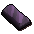 Novite bar |
1 |
![[image]](../../img/main/kbase/skills/dungeoneering/items/ores_bars/novite_ore.gif) Novite ore |
7 |
| 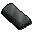 Bathus bar |
10 |
![[image]](../../img/main/kbase/skills/dungeoneering/items/ores_bars/bathus_ore.gif) Bathus ore |
13.3 |
| 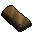 Marmaros bar |
20 |
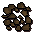 Marmaros ore |
19.6 |
| 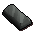 Kratonite bar |
30 |
![[image]](../../img/main/kbase/skills/dungeoneering/items/ores_bars/kratonite_ore.gif) Kratonite ore |
25.9 |
![[image]](../../img/main/kbase/skills/dungeoneering/items/ores_bars/fractite_bar.gif) Fractite bar |
40 |
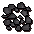 Fractite ore |
32.2 |
![[image]](../../img/main/kbase/skills/dungeoneering/items/ores_bars/zephyrium_bar.gif) Zephyrium bar (m) |
50 |
![[image]](../../img/main/kbase/skills/dungeoneering/items/ores_bars/zephyrium_ore.gif) Zephyrium ore |
38.5 |
![[image]](../../img/main/kbase/skills/dungeoneering/items/ores_bars/argonite_bar.gif) Argonite bar (m) |
60 |
![[image]](../../img/main/kbase/skills/dungeoneering/items/ores_bars/argonite_ore.gif) Argonite ore |
44.8 |
| 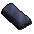 Katagon bar (m) |
70 |
![[image]](../../img/main/kbase/skills/dungeoneering/items/ores_bars/katagon_ore.gif) Katagon ore |
51.1 |
| 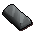 Gorgonite bar (m) |
80 |
![[image]](../../img/main/kbase/skills/dungeoneering/items/ores_bars/gorgonite_ore.gif) Gorgonite ore |
57.4 |
| 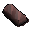 Promethium bar (m) |
90 |
![[image]](../../img/main/kbase/skills/dungeoneering/items/ores_bars/promethium_ore.gif) Promethium ore |
63.7 |
Smithing Novite
As with the other metal types, smithing novite in Daemonheim is identical to smithing above ground. Take your bars to an anvil, often found in the starting room of your dungeon, and use a hammer to make the items you require. A hammer can be purchased from the smuggler.
| Item name | Levels required | Bars required | Experience Points Gained |
| 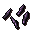 Novite arrowheads (15) |
1 |
1 | 10 |
![[image]](../../img/main/kbase/skills/dungeoneering/items/weapons_ammo/novite_dagger.gif) Novite dagger |
1 |
1 | 10 |
![[image]](../../img/main/kbase/skills/dungeoneering/items/armour/novite_boots.gif) Novite boots |
1 |
1 | 10.5 |
![[image]](../../img/main/kbase/skills/dungeoneering/items/armour/novite_gauntlets.gif) Novite gauntlets |
1 |
1 | 10.5 |
![[image]](../../img/main/kbase/skills/dungeoneering/items/misc/novite_hatchet.gif) Novite hatchet |
2 |
1 | 11 |
![[image]](../../img/main/kbase/skills/dungeoneering/items/misc/novite_pickaxe.gif) Novite pickaxe |
2 |
1 | 11 |
![[image]](../../img/main/kbase/skills/dungeoneering/items/weapons_ammo/novite_warhammer.gif) Novite warhammer |
3 |
2 | 23 |
![[image]](../../img/main/kbase/skills/dungeoneering/items/weapons_ammo/novite_rapier.gif) Novite rapier |
3 |
2 | 23 |
![[image]](../../img/main/kbase/skills/dungeoneering/items/weapons_ammo/novite_longsword.gif) Novite longsword |
4 |
2 | 24 |
| 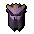 Novite full helm |
5 |
2 | 25 |
![[image]](../../img/main/kbase/skills/dungeoneering/items/weapons_ammo/novite_battleaxe.gif) Novite battleaxe |
5 |
2 | 25 |
| 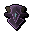 Novite kiteshield |
6 |
3 | 39 |
| 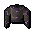 Novite chainbody |
6 |
3 | 39 |
![[image]](../../img/main/kbase/skills/dungeoneering/items/armour/novite_platelegs.gif) Novite platelegs |
7 |
3 | 40.5 |
| 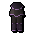 Novite plateskirt |
7 |
3 | 40.5 |
![[image]](../../img/main/kbase/skills/dungeoneering/items/weapons_ammo/novite_spear.gif) Novite spear |
7 |
4 | 54 |
![[image]](../../img/main/kbase/skills/dungeoneering/items/weapons_ammo/novite_maul.gif) Novite maul |
8 |
4 | 56 |
![[image]](../../img/main/kbase/skills/dungeoneering/items/weapons_ammo/novite_2h_sword.gif) Novite 2h sword |
8 |
4 | 56 |
![[image]](../../img/main/kbase/skills/dungeoneering/items/armour/novite_platebody.gif) Novite platebody |
9 |
5 | 72.5 |
Smithing Bathus
| Item name | Levels required | Bars required | Experience Points Gained |
![[image]](../../img/main/kbase/skills/dungeoneering/items/weapons_ammo/bathus_arrowtips.gif) Bathus arrowheads (15) |
10 |
1 | 19 |
![[image]](../../img/main/kbase/skills/dungeoneering/items/weapons_ammo/bathus_dagger.gif) Bathus dagger |
10 |
1 | 19 |
![[image]](../../img/main/kbase/skills/dungeoneering/items/armour/bathus_boots.gif) Bathus boots |
11 |
1 | 19.5 |
![[image]](../../img/main/kbase/skills/dungeoneering/items/armour/bathus_gauntlets.gif) Bathus gauntlets |
11 |
1 | 19.5 |
![[image]](../../img/main/kbase/skills/dungeoneering/items/misc/bathus_hatchet.gif) Bathus hatchet |
12 |
1 | 20 |
![[image]](../../img/main/kbase/skills/dungeoneering/items/misc/bathus_pickaxe.gif) Bathus pickaxe |
12 |
1 | 20 |
| 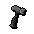 Bathus warhammer |
13 |
2 | 41 |
![[image]](../../img/main/kbase/skills/dungeoneering/items/weapons_ammo/bathus_rapier.gif) Bathus rapier |
13 |
2 | 41 |
| 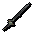 Bathus longsword |
14 |
2 | 42 |
| 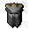 Bathus full helm |
15 |
2 | 43 |
| 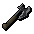 Bathus battleaxe |
15 |
2 | 43 |
![[image]](../../img/main/kbase/skills/dungeoneering/items/armour/bathus_kiteshield.gif) Bathus kiteshield |
16 |
3 | 66 |
| 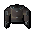 Bathus chainbody |
16 |
3 | 66 |
![[image]](../../img/main/kbase/skills/dungeoneering/items/armour/bathus_platelegs.gif) Bathus platelegs |
17 |
3 | 67.5 |
| 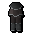 Bathus plateskirt |
17 |
3 | 67.5 |
| 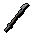 Bathus spear |
17 |
4 | 90 |
![[image]](../../img/main/kbase/skills/dungeoneering/items/weapons_ammo/bathus_maul.gif) Bathus maul |
18 |
4 | 92 |
| 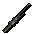 Bathus 2h sword |
18 |
4 | 92 |
| 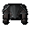 Bathus platebody |
19 |
5 | 117.5 |
Smithing Marmaros
| Item name | Levels required | Bars required | Experience Points Gained |
![[image]](../../img/main/kbase/skills/dungeoneering/items/weapons_ammo/marmaros_arrowtips.gif) Marmaros arrowheads (15) |
20 |
1 | 28 |
| 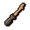 Marmaros dagger |
20 |
1 | 28 |
![[image]](../../img/main/kbase/skills/dungeoneering/items/armour/marmaros_boots.gif) Marmaros boots |
21 |
1 | 28.5 |
![[image]](../../img/main/kbase/skills/dungeoneering/items/armour/marmaros_gauntlets.gif) Marmaros gauntlets |
21 |
1 | 28.5 |
![[image]](../../img/main/kbase/skills/dungeoneering/items/misc/marmaros_hatchet.gif) Marmaros hatchet |
22 |
1 | 29 |
![[image]](../../img/main/kbase/skills/dungeoneering/items/misc/marmaros_pickaxe.gif) Marmaros pickaxe |
22 |
1 | 29 |
![[image]](../../img/main/kbase/skills/dungeoneering/items/weapons_ammo/marmaros_warhammer.gif) Marmaros warhammer |
23 |
2 | 59 |
![[image]](../../img/main/kbase/skills/dungeoneering/items/weapons_ammo/marmaros_rapier.gif) Marmaros rapier |
23 |
2 | 59 |
| 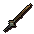 Marmaros longsword |
24 |
2 | 60 |
![[image]](../../img/main/kbase/skills/dungeoneering/items/armour/marmaros_full_helm.gif) Marmaros full helm |
25 |
2 | 61 |
![[image]](../../img/main/kbase/skills/dungeoneering/items/weapons_ammo/marmaros_battleaxe.gif) Marmaros battleaxe |
25 |
2 | 61 |
| 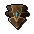 Marmaros kiteshield |
26 |
3 | 93 |
![[image]](../../img/main/kbase/skills/dungeoneering/items/armour/marmaros_chainbody.gif) Marmaros chainbody |
26 |
3 | 93 |
| 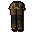 Marmaros platelegs |
27 |
3 | 94.5 |
| 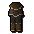 Marmaros plateskirt |
27 |
3 | 94.5 |
![[image]](../../img/main/kbase/skills/dungeoneering/items/weapons_ammo/marmaros_spear.gif) Marmaros spear |
27 |
4 | 126 |
![[image]](../../img/main/kbase/skills/dungeoneering/items/weapons_ammo/marmaros_maul.gif) Marmaros maul |
28 |
4 | 128 |
| 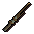 Marmaros 2h sword |
28 |
4 | 128 |
| 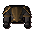 Marmaros platebody |
29 |
5 | 162.5 |
Smithing Kratonium
| Item name | Levels required | Bars required | Experience Points Gained |
![[image]](../../img/main/kbase/skills/dungeoneering/items/weapons_ammo/kratonite_arrowtips.gif) Kratonite arrowheads (15) |
30 |
1 | 37 |
![[image]](../../img/main/kbase/skills/dungeoneering/items/weapons_ammo/kratonite_dagger.gif) Kratonite dagger |
30 |
1 | 37 |
![[image]](../../img/main/kbase/skills/dungeoneering/items/armour/kratonite_boots.gif) Kratonite boots |
31 |
1 | 37.5 |
![[image]](../../img/main/kbase/skills/dungeoneering/items/armour/kratonite_gauntlets.gif) Kratonite gauntlets |
31 |
1 | 37.5 |
| 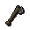 Kratonite hatchet |
32 |
1 | 38 |
![[image]](../../img/main/kbase/skills/dungeoneering/items/misc/kratonite_pickaxe.gif) Kratonite pickaxe |
32 |
1 | 38 |
| 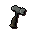 Kratonite warhammer |
33 |
2 | 77 |
![[image]](../../img/main/kbase/skills/dungeoneering/items/weapons_ammo/kratonite_rapier.gif) Kratonite rapier |
33 |
2 | 77 |
| 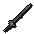 Kratonite longsword |
34 |
2 | 78 |
| 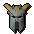 Kratonite full helm |
35 |
2 | 79 |
| 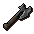 Kratonite battleaxe |
35 |
2 | 79 |
| 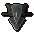 Kratonite kiteshield |
36 |
3 | 120 |
| 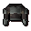 Kratonite chainbody |
36 |
3 | 120 |
![[image]](../../img/main/kbase/skills/dungeoneering/items/armour/kratonite_platelegs.gif) Kratonite platelegs |
37 |
3 | 121.5 |
![[image]](../../img/main/kbase/skills/dungeoneering/items/armour/kratonite_plateskirt.gif) Kratonite plateskirt |
37 |
3 | 121.5 |
![[image]](../../img/main/kbase/skills/dungeoneering/items/weapons_ammo/kratonite_spear.gif) Kratonite spear |
37 |
4 | 162 |
![[image]](../../img/main/kbase/skills/dungeoneering/items/weapons_ammo/kratonite_maul.gif) Kratonite maul |
38 |
4 | 164 |
![[image]](../../img/main/kbase/skills/dungeoneering/items/weapons_ammo/kratonite_2h_sword.gif) Kratonite 2h sword |
38 |
4 | 164 |
![[image]](../../img/main/kbase/skills/dungeoneering/items/armour/kratonite_platebody.gif) Kratonite platebody |
39 |
5 | 207.5 |
Smithing Fractite
| Item name | Levels required | Bars required | Experience Points Gained |
![[image]](../../img/main/kbase/skills/dungeoneering/items/weapons_ammo/fractite_arrowtips.gif) Fractite arrowheads (15) |
40 |
1 | 46 |
| 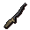 Fractite dagger |
40 |
1 | 46 |
![[image]](../../img/main/kbase/skills/dungeoneering/items/armour/fractite_boots.gif) Fractite boots |
41 |
1 | 46.5 |
![[image]](../../img/main/kbase/skills/dungeoneering/items/armour/fractite_gauntlets.gif) Fractite gauntlets |
41 |
1 | 46.5 |
| 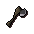 Fractite hatchet |
42 |
1 | 47 |
![[image]](../../img/main/kbase/skills/dungeoneering/items/misc/fractite_pickaxe.gif) Fractite pickaxe |
42 |
1 | 47 |
![[image]](../../img/main/kbase/skills/dungeoneering/items/weapons_ammo/fractite_warhammer.gif) Fractite warhammer |
43 |
2 | 95 |
![[image]](../../img/main/kbase/skills/dungeoneering/items/weapons_ammo/fractite_rapier.gif) Fractite rapier |
43 |
2 | 95 |
| 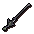 Fractite longsword |
44 |
2 | 96 |
![[image]](../../img/main/kbase/skills/dungeoneering/items/armour/fractite_full_helm.gif) Fractite full helm |
45 |
2 | 97 |
![[image]](../../img/main/kbase/skills/dungeoneering/items/weapons_ammo/fractite_battleaxe.gif) Fractite battleaxe |
45 |
2 | 97 |
Fractite kiteshield |
46 |
3 | 147 |
![[image]](../../img/main/kbase/skills/dungeoneering/items/armour/fractite_chainbody.gif) Fractite chainbody |
46 |
3 | 147 |
![[image]](../../img/main/kbase/skills/dungeoneering/items/armour/fractite_platelegs.gif) Fractite platelegs |
47 |
3 | 148.5 |
![[image]](../../img/main/kbase/skills/dungeoneering/items/armour/fractite_plateskirt.gif) Fractite plateskirt |
47 |
3 | 148.5 |
![[image]](../../img/main/kbase/skills/dungeoneering/items/weapons_ammo/fractite_spear.gif) Fractite spear |
47 |
4 | 198 |
![[image]](../../img/main/kbase/skills/dungeoneering/items/weapons_ammo/fractite_maul.gif) Fractite maul |
48 |
4 | 200 |
![[image]](../../img/main/kbase/skills/dungeoneering/items/weapons_ammo/fractite_2h_sword.gif) Fractite 2h sword |
48 |
4 | 200 |
| 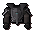 Fractite platebody |
49 |
5 | 252.5 |
Smithing Zephyrium
(m) = Members Only
| Item name | Levels required | Bars required | Experience Points Gained |
![[image]](../../img/main/kbase/skills/dungeoneering/items/weapons_ammo/zephyrium_arrowtips.gif) Zephyrium arrowheads (15) (m) |
50 |
1 | 55 |
![[image]](../../img/main/kbase/skills/dungeoneering/items/weapons_ammo/zephyrium_dagger.gif) Zephyrium dagger (m) |
50 |
1 | 55 |
![[image]](../../img/main/kbase/skills/dungeoneering/items/armour/zephyrium_boots.gif) Zephyrium boots (m) |
51 |
1 | 55.5 |
| 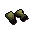 Zephyrium gauntlets (m) |
51 |
1 | 55.5 |
![[image]](../../img/main/kbase/skills/dungeoneering/items/misc/zephyrium_hatchet.gif) Zephyrium hatchet (m) |
52 |
1 | 56 |
![[image]](../../img/main/kbase/skills/dungeoneering/items/misc/zephyrium_pickaxe.gif) Zephyrium pickaxe (m) |
52 |
1 | 56 |
![[image]](../../img/main/kbase/skills/dungeoneering/items/weapons_ammo/zephyrium_warhammer.gif) Zephyrium warhammer (m) |
53 |
2 | 113 |
![[image]](../../img/main/kbase/skills/dungeoneering/items/weapons_ammo/zephyrium_rapier.gif) Zephyrium rapier (m) |
53 |
2 | 113 |
![[image]](../../img/main/kbase/skills/dungeoneering/items/weapons_ammo/zephyrium_longsword.gif) Zephyrium longsword (m) |
54 |
2 | 114 |
![[image]](../../img/main/kbase/skills/dungeoneering/items/armour/zephyrium_full_helm.gif) Zephyrium full helm (m) |
55 |
2 | 115 |
![[image]](../../img/main/kbase/skills/dungeoneering/items/weapons_ammo/zephyrium_battleaxe.gif) Zephyrium battleaxe (m) |
55 |
2 | 115 |
![[image]](../../img/main/kbase/skills/dungeoneering/items/armour/zephyrium_kiteshield.gif) Zephyrium kiteshield (m) |
56 |
3 | 174 |
![[image]](../../img/main/kbase/skills/dungeoneering/items/armour/zephyrium_chainbody.gif) Zephyrium chainbody (m) |
56 |
3 | 174 |
| 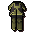 Zephyrium platelegs (m) |
57 |
3 | 175.5 |
![[image]](../../img/main/kbase/skills/dungeoneering/items/armour/zephyrium_plateskirt1.gif) Zephyrium plateskirt (m) |
57 |
3 | 175.5 |
| 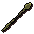 Zephyrium spear (m) |
57 |
4 | 234 |
![[image]](../../img/main/kbase/skills/dungeoneering/items/weapons_ammo/zephyrium_maul.gif) Zephyrium maul (m) |
58 |
4 | 236 |
| 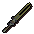 Zephyrium 2h sword (m) |
58 |
4 | 235 |
![[image]](../../img/main/kbase/skills/dungeoneering/items/armour/zephyrium_platebody.gif) Zephyrium platebody (m) |
59 |
5 | 297.5 |
Smithing Argonite
(m) = Members Only
| Item name | Levels required | Bars required | Experience Points Gained |
| 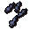 Argonite arrowheads (15) (m) |
60 |
1 | 64 |
![[image]](../../img/main/kbase/skills/dungeoneering/items/weapons_ammo/argonite_dagger.gif) Argonite dagger (m) |
60 |
1 | 64 |
![[image]](../../img/main/kbase/skills/dungeoneering/items/armour/argonite_boots.gif) Argonite boots (m) |
61 |
1 | 64.5 |
![[image]](../../img/main/kbase/skills/dungeoneering/items/armour/argonite_gauntlets.gif) Argonite gauntlets (m) |
61 |
1 | 64.5 |
![[image]](../../img/main/kbase/skills/dungeoneering/items/misc/argonite_hatchet.gif) Argonite hatchet (m) |
62 |
1 | 65 |
![[image]](../../img/main/kbase/skills/dungeoneering/items/misc/argonite_pickaxe.gif) Argonite pickaxe (m) |
62 |
1 | 65 |
| 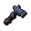 Argonite warhammer (m) |
63 |
2 | 131 |
![[image]](../../img/main/kbase/skills/dungeoneering/items/weapons_ammo/argonite_rapier.gif) Argonite rapier (m) |
63 |
2 | 131 |
![[image]](../../img/main/kbase/skills/dungeoneering/items/weapons_ammo/argonite_longsword.gif) Argonite longsword (m) |
64 |
2 | 132 |
![[image]](../../img/main/kbase/skills/dungeoneering/items/armour/argonite_full_helm.gif) Argonite full helm (m) |
65 |
2 | 133 |
![[image]](../../img/main/kbase/skills/dungeoneering/items/weapons_ammo/argonite_battleaxe.gif) Argonite battleaxe (m) |
65 |
2 | 133 |
![[image]](../../img/main/kbase/skills/dungeoneering/items/armour/argonite_kiteshield.gif) Argonite kiteshield (m) |
66 |
3 | 201 |
![[image]](../../img/main/kbase/skills/dungeoneering/items/armour/argonite_chainbody.gif) Argonite chainbody (m) |
66 |
3 | 201 |
![[image]](../../img/main/kbase/skills/dungeoneering/items/armour/argonite_platelegs.gif) Argonite platelegs (m) |
67 |
3 | 202.5 |
| 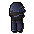 Argonite plateskirt (m) |
67 |
3 | 202.5 |
![[image]](../../img/main/kbase/skills/dungeoneering/items/weapons_ammo/argonite_spear.gif) Argonite spear (m) |
67 |
4 | 270 |
![[image]](../../img/main/kbase/skills/dungeoneering/items/weapons_ammo/argonite_maul.gif) Argonite maul (m) |
68 |
4 | 272 |
![[image]](../../img/main/kbase/skills/dungeoneering/items/weapons_ammo/argonite_2h_sword.gif) Argonite 2h sword (m) |
68 |
4 | 272 |
![[image]](../../img/main/kbase/skills/dungeoneering/items/armour/argonite_platebody.gif) Argonite platebody (m) |
69 |
5 | 342.5 |
Smithing Katagon
(m) = Members Only
| Item name | Levels required | Bars required | Experience Points Gained |
![[image]](../../img/main/kbase/skills/dungeoneering/items/weapons_ammo/katagon_arrowtips.gif) Katagon arrowheads (15) (m) |
70 |
1 | 73 |
![[image]](../../img/main/kbase/skills/dungeoneering/items/weapons_ammo/katagon_dagger.gif) Katagon dagger (m) |
70 |
1 | 73 |
| 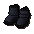 Katagon boots (m) |
71 |
1 | 73.5 |
![[image]](../../img/main/kbase/skills/dungeoneering/items/armour/katagon_gauntlets.gif) Katagon gauntlets (m) |
71 |
1 | 73.5 |
![[image]](../../img/main/kbase/skills/dungeoneering/items/misc/katagon_hatchet.gif) Katagon hatchet (m) |
72 |
1 | 74 |
![[image]](../../img/main/kbase/skills/dungeoneering/items/misc/katagon_pickaxe.gif) Katagon pickaxe (m) |
72 |
1 | 74 |
![[image]](../../img/main/kbase/skills/dungeoneering/items/weapons_ammo/katagon_warhammer.gif) Katagon warhammer (m) |
73 |
2 | 149 |
| 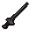 Katagon rapier (m) |
73 |
2 | 149 |
![[image]](../../img/main/kbase/skills/dungeoneering/items/weapons_ammo/katagon_longsword.gif) Katagon longsword (m) |
74 |
2 | 150 |
![[image]](../../img/main/kbase/skills/dungeoneering/items/armour/katagon_full_helm.gif) Katagon full helm (m) |
75 |
2 | 151 |
![[image]](../../img/main/kbase/skills/dungeoneering/items/weapons_ammo/katagon_battleaxe.gif) Katagon battleaxe (m) |
75 |
2 | 151 |
![[image]](../../img/main/kbase/skills/dungeoneering/items/armour/katagon_kiteshield.gif) Katagon kiteshield (m) |
76 |
3 | 228 |
![[image]](../../img/main/kbase/skills/dungeoneering/items/armour/katagon_chainbody.gif) Katagon chainbody (m) |
76 |
3 | 228 |
![[image]](../../img/main/kbase/skills/dungeoneering/items/armour/katagon_platelegs.gif) Katagon platelegs (m) |
77 |
3 | 229.5 |
![[image]](../../img/main/kbase/skills/dungeoneering/items/armour/katagon_plateskirt.gif) Katagon plateskirt (m) |
77 |
3 | 229.5 |
Katagon spear (m) |
77 |
4 | 306 |
![[image]](../../img/main/kbase/skills/dungeoneering/items/weapons_ammo/katagon_maul.gif) Katagon maul (m) |
78 |
4 | 308 |
![[image]](../../img/main/kbase/skills/dungeoneering/items/weapons_ammo/katagon_2h_sword.gif) Katagon 2h sword (m) |
78 |
4 | 308 |
![[image]](../../img/main/kbase/skills/dungeoneering/items/armour/katagon_platebody.gif) Katagon platebody (m) |
79 |
5 | 387.5 |
Smithing Gorgonite
(m) = Members Only
| Item name | Levels required | Bars required | Experience Points Gained |
Gorgonite arrowheads (15) (m) |
80 |
1 | 82 |
![[image]](../../img/main/kbase/skills/dungeoneering/items/weapons_ammo/gorgonite_dagger.gif) Gorgonite dagger (m) |
80 |
1 | 82 |
Gorgonite boots (m) |
81 |
1 | 82.5 |
![[image]](../../img/main/kbase/skills/dungeoneering/items/armour/gorgonite_gauntlets.gif) Gorgonite gauntlets (m) |
81 |
1 | 82.5 |
![[image]](../../img/main/kbase/skills/dungeoneering/items/misc/gorgonite_hatchet.gif) Gorgonite hatchet (m) |
82 |
1 | 83 |
![[image]](../../img/main/kbase/skills/dungeoneering/items/misc/gorgonite_pickaxe.gif) Gorgonite pickaxe (m) |
82 |
1 | 83 |
Gorgonite warhammer (m) |
83 |
2 | 167 |
Gorgonite rapier (m) |
83 |
2 | 167 |
![[image]](../../img/main/kbase/skills/dungeoneering/items/weapons_ammo/gorgonite_longsword.gif) Gorgonite longsword (m) |
84 |
2 | 168 |
Gorgonite full helm (m) |
85 |
2 | 169 |
![[image]](../../img/main/kbase/skills/dungeoneering/items/weapons_ammo/gorgonite_battleaxe.gif) Gorgonite battleaxe (m) |
85 |
2 | 169 |
Gorgonite kiteshield (m) |
86 |
3 | 255 |
![[image]](../../img/main/kbase/skills/dungeoneering/items/armour/gorgonite_chainbody.gif) Gorgonite chainbody (m) |
86 |
3 | 255 |
Gorgonite platelegs (m) |
87 |
3 | 256.5 |
![[image]](../../img/main/kbase/skills/dungeoneering/items/armour/gorgonite_plateskirt.gif) Gorgonite plateskirt (m) |
87 |
3 | 256.5 |
Gorgonite spear (m) |
87 |
4 | 342 |
![[image]](../../img/main/kbase/skills/dungeoneering/items/weapons_ammo/gorgonite_maul.gif) Gorgonite maul (m) |
88 |
4 | 344 |
Gorgonite 2h sword (m) |
88 |
4 | 344 |
![[image]](../../img/main/kbase/skills/dungeoneering/items/armour/gorgonite_platebody.gif) Gorgonite platebody (m) |
89 |
5 | 432.5 |
Smithing Promethium
(m) = Members Only
| Item name | Levels required | Bars required | Experience Points Gained |
![[image]](../../img/main/kbase/skills/dungeoneering/items/weapons_ammo/promethium_arrowtips.gif) Promethium arrowheads (15) (m) |
90 |
1 | 91 |
![[image]](../../img/main/kbase/skills/dungeoneering/items/weapons_ammo/promethium_dagger.gif) Promethium dagger (m) |
90 |
1 | 91 |
![[image]](../../img/main/kbase/skills/dungeoneering/items/armour/promethium_boots.gif) Promethium boots (m) |
91 |
1 | 91.5 |
Promethium gauntlets (m) |
91 |
1 | 91.5 |
![[image]](../../img/main/kbase/skills/dungeoneering/items/misc/promethium_hatchet.gif) Promethium hatchet (m) |
92 |
1 | 92 |
![[image]](../../img/main/kbase/skills/dungeoneering/items/misc/promethium_pickaxe.gif) Promethium pickaxe (m) |
92 |
1 | 92 |
![[image]](../../img/main/kbase/skills/dungeoneering/items/weapons_ammo/promethium_warhammer.gif) Promethium warhammer (m) |
93 |
2 | 185 |
![[image]](../../img/main/kbase/skills/dungeoneering/items/weapons_ammo/promethium_rapier.gif) Promethium rapier (m) |
93 |
2 | 185 |
![[image]](../../img/main/kbase/skills/dungeoneering/items/weapons_ammo/promethium_longsword.gif) Promethium longsword (m) |
94 |
2 | 186 |
![[image]](../../img/main/kbase/skills/dungeoneering/items/armour/promethium_full_helm.gif) Promethium full helm (m) |
95 |
2 | 187 |
![[image]](../../img/main/kbase/skills/dungeoneering/items/weapons_ammo/promethium_battleaxe.gif) Promethium battleaxe (m) |
95 |
2 | 187 |
![[image]](../../img/main/kbase/skills/dungeoneering/items/armour/promethium_kiteshield.gif) Promethium kiteshield (m) |
96 |
3 | 282 |
![[image]](../../img/main/kbase/skills/dungeoneering/items/armour/promethium_chainbody.gif) Promethium chainbody (m) |
96 |
3 | 282 |
![[image]](../../img/main/kbase/skills/dungeoneering/items/armour/promethium_platelegs.gif) Promethium platelegs (m) |
97 |
3 | 283.5 |
Promethium plateskirt (m) |
97 |
3 | 283.5 |
![[image]](../../img/main/kbase/skills/dungeoneering/items/weapons_ammo/promethium_spear.gif) Promethium spear (m) |
97 |
4 | 378 |
![[image]](../../img/main/kbase/skills/dungeoneering/items/weapons_ammo/promethium_maul.gif) Promethium maul (m) |
98 |
4 | 380 |
Promethium 2h sword (m) |
98 |
4 | 380 |
![[image]](../../img/main/kbase/skills/dungeoneering/items/armour/promethium_platebody.gif) Promethium platebody (m) |
99 |
5 | 477.5 |

More articles in
Dungeoneering
|
|
|
Further Help
If this article does not help you, you may find the following sections of the RuneScape site helpful:
|
|